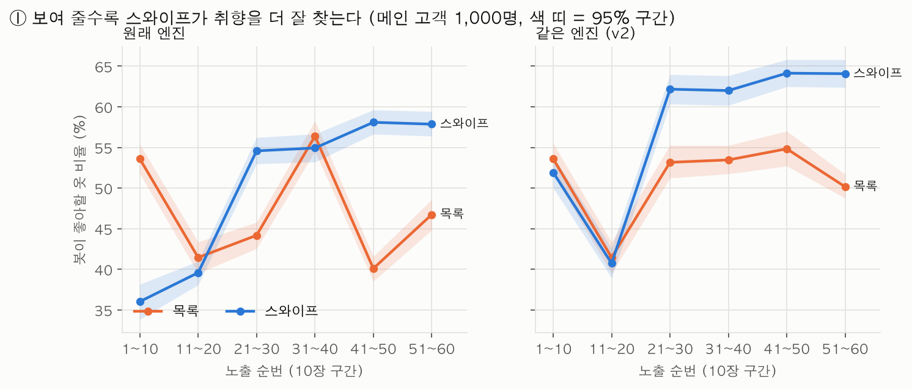
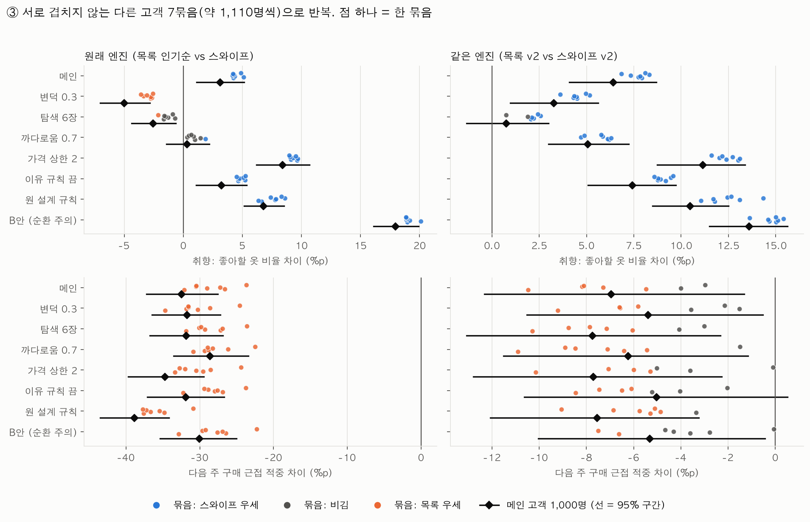
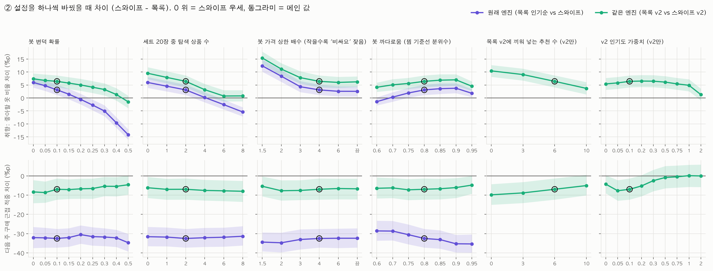
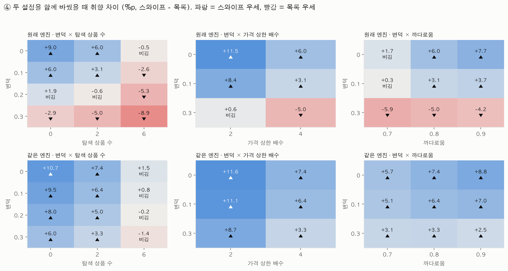
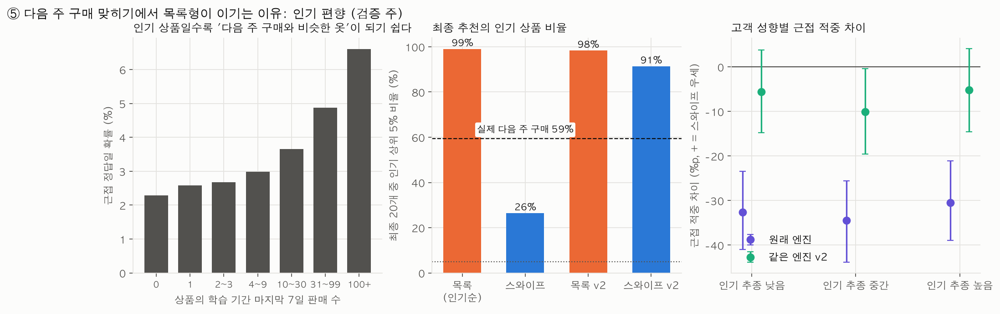
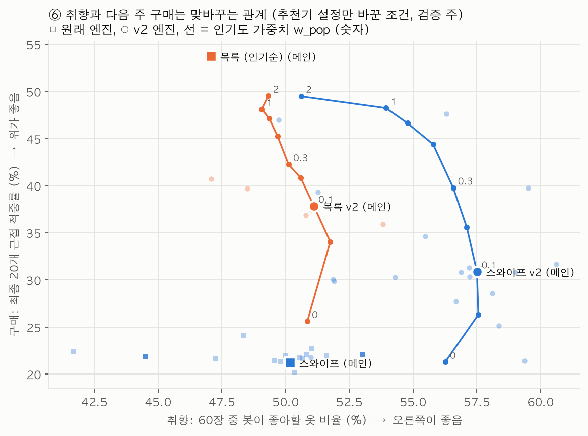
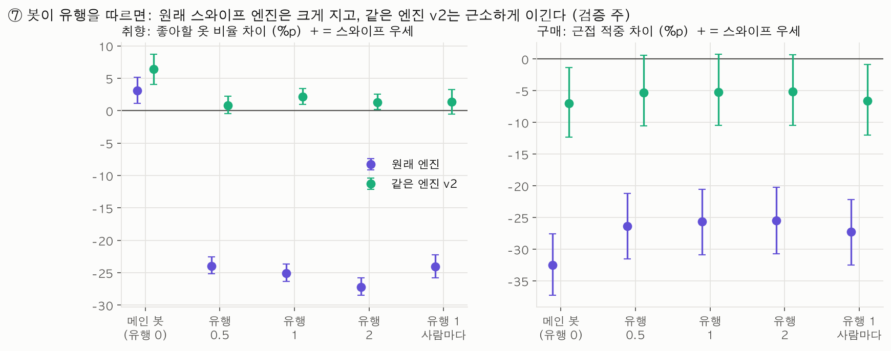

<title>목록 vs 스와이프 실험 결과</title>
<meta name="claude:viewport-fit-sides" content="cover">
<link rel="stylesheet" href="https://fonts.googleapis.com/css2?family=IBM+Plex+Sans+KR:wght@400;500;700&family=IBM+Plex+Mono:wght@500&display=swap">
<style>
/* 레이아웃: 한 줄 읽기 폭(본문 44rem), 그래프는 더 넓게(64rem). 위에서 아래로 결론 → 근거 → 해석 → 한계 */
:root {
  --bg: #f7f8fa; --paper: #ffffff; --fg: #14171c; --fg2: #4f5662; --line: #e1e4ea;
  --swipe: #2a78d6; --list: #d4572a; --tie: #7a808a;
  --swipe-bg: #e6f0fc; --list-bg: #fbeae3; --tie-bg: #eef0f3; --figbg: #fcfcfb;
  --sans: "IBM Plex Sans KR", "Apple SD Gothic Neo", "Malgun Gothic", sans-serif;
  --mono: "IBM Plex Mono", ui-monospace, Menlo, monospace;
}
@media (prefers-color-scheme: dark) { :root:not([data-theme="light"]) {
  --bg: #121418; --paper: #1a1d22; --fg: #eceef2; --fg2: #a7adb8; --line: #2c3038;
  --swipe: #5b9ef0; --list: #ef7c50; --tie: #9aa0aa;
  --swipe-bg: #1b2b40; --list-bg: #3a2218; --tie-bg: #262a31; --figbg: #fcfcfb; color-scheme: dark } }
:root[data-theme="dark"] {
  --bg: #121418; --paper: #1a1d22; --fg: #eceef2; --fg2: #a7adb8; --line: #2c3038;
  --swipe: #5b9ef0; --list: #ef7c50; --tie: #9aa0aa;
  --swipe-bg: #1b2b40; --list-bg: #3a2218; --tie-bg: #262a31; --figbg: #fcfcfb; color-scheme: dark }

body { background: var(--bg); color: var(--fg); font-family: var(--sans); font-size: 16px; line-height: 1.7;
  padding-left: max(16px, env(safe-area-inset-left, 0px)); padding-right: max(16px, env(safe-area-inset-right, 0px)); padding-block: 2.5rem 4rem; }
main { max-width: 64rem; margin: 0 auto; display: grid; gap: 3.5rem; }
.prose { max-width: 44rem; }
h1, h2, h3 { text-wrap: balance; line-height: 1.3; margin: 0; }
h1 { font-size: clamp(1.7rem, 4vw, 2.4rem); font-weight: 700; letter-spacing: -0.01em; }
h2 { font-size: 1.45rem; font-weight: 700; }
h3 { font-size: 1.08rem; font-weight: 700; }
p { margin: 0; }
section { display: grid; gap: 1.25rem; }
.eyebrow { font-size: 0.8rem; letter-spacing: 0.06em; color: var(--fg2); font-weight: 500; }
.lede { font-size: 1.15rem; color: var(--fg); }
.muted { color: var(--fg2); font-size: 0.92rem; }
.num { font-family: var(--mono); font-variant-numeric: tabular-nums; }
.s { color: var(--swipe); font-weight: 700; } .l { color: var(--list); font-weight: 700; }
code { font-family: var(--mono); font-size: 0.85em; background: var(--tie-bg); padding: 0.1em 0.35em; border-radius: 4px; }

header { display: grid; gap: 1rem; }
.notice { border: 1px solid var(--line); background: var(--paper); border-radius: 8px; padding: 0.7rem 1rem; font-size: 0.92rem; color: var(--fg2); }

.stats { display: grid; grid-template-columns: repeat(auto-fit, minmax(13rem, 1fr)); gap: 1rem; }
.stat { background: var(--paper); border: 1px solid var(--line); border-radius: 10px; padding: 1.1rem 1.2rem; display: grid; gap: 0.3rem; align-content: start; }
.stat .big { font-family: var(--mono); font-size: 2rem; font-weight: 500; line-height: 1.1; font-variant-numeric: tabular-nums; }
.stat .cap { font-size: 0.9rem; color: var(--fg2); line-height: 1.5; }

ol.flow { margin: 0; padding-left: 1.3rem; display: grid; gap: 0.6rem; }
ul { margin: 0; padding-left: 1.2rem; display: grid; gap: 0.4rem; }

.tablewrap { overflow-x: auto; background: var(--paper); border: 1px solid var(--line); border-radius: 10px; }
table { border-collapse: collapse; width: 100%; font-size: 0.93rem; }
th, td { padding: 0.6rem 0.85rem; text-align: left; border-bottom: 1px solid var(--line); vertical-align: top; }
tr:last-child td { border-bottom: 0; }
th { font-weight: 500; color: var(--fg2); font-size: 0.85rem; white-space: nowrap; }
td.n { font-family: var(--mono); font-variant-numeric: tabular-nums; white-space: nowrap; }
.chip { display: inline-block; font-size: 0.78rem; font-weight: 700; padding: 0.05rem 0.5rem; border-radius: 99px; margin-left: 0.35rem; white-space: nowrap; font-family: var(--sans); }
.chip.s { background: var(--swipe-bg); color: var(--swipe); }
.chip.l { background: var(--list-bg); color: var(--list); }
.chip.t { background: var(--tie-bg); color: var(--tie); }

figure { margin: 0; display: grid; gap: 0.6rem; }
figure .frame { background: var(--figbg); border: 1px solid var(--line); border-radius: 10px; padding: 0.75rem; overflow-x: auto; }
figure img { display: block; width: 100%; height: auto; min-width: 40rem; }
figcaption { font-size: 0.9rem; color: var(--fg2); max-width: 44rem; }

.cards { display: grid; grid-template-columns: repeat(auto-fit, minmax(17rem, 1fr)); gap: 1rem; }
.card { background: var(--paper); border: 1px solid var(--line); border-radius: 10px; padding: 1rem 1.2rem; display: grid; gap: 0.5rem; align-content: start; min-width: 0; }
.card .tag { font-size: 0.78rem; font-weight: 700; letter-spacing: 0.04em; }
.card .tag.s { color: var(--swipe); } .card .tag.l { color: var(--list); } .card .tag.t { color: var(--tie); }

footer { border-top: 1px solid var(--line); padding-top: 1.25rem; font-size: 0.88rem; color: var(--fg2); display: grid; gap: 0.4rem; }
</style>

<main>
  <header class="prose">
    <p class="eyebrow">H&amp;M 고객 봇 실험 · 135개 실행 · 2026-11-26</p>
    <h1>목록형 쇼핑몰과 스와이프형(대추마켓), 숨은 취향을 누가 더 잘 찾나</h1>
    <p class="lede">추천 엔진을 같게 맞추면 <span class="s">스와이프</span>가 봇의 숨은 취향을 더 잘 찾습니다. 조건을 79가지로 바꿔도 진 적이 없습니다. 하지만 <span class="l">다음 주에 실제로 살 옷</span>을 맞히는 데는 인기 상품 위주의 목록형이 유리합니다.</p>
    <p class="notice">메인 결과는 <b>정답 주</b>(9/16~9/22)로 한 번만 채점했습니다. 135개 조건 비교는 <b>검증 주</b>(9/9~9/15) 기준입니다. ▲ 스와이프 우세, ▼ 목록 우세, 비김 = 95% 구간이 0을 포함.</p>
  </header>

  <section aria-label="핵심 수치">
    <div class="stats">
      <div class="stat"><span class="big s">+6.4%p</span><span class="cap">같은 엔진에서 60장 중 봇이 좋아할 옷 비율 차이 (51.1% → 57.5%)</span></div>
      <div class="stat"><span class="big s">68 / 79</span><span class="cap">조건을 바꿔 돌린 79개 중 스와이프가 이긴 조건. 나머지 11개는 비김, 진 조건 0</span></div>
      <div class="stat"><span class="big s">7 / 7</span><span class="cap">서로 겹치지 않는 다른 고객 7묶음(약 1,110명씩)에서 모두 같은 결론</span></div>
      <div class="stat"><span class="big l">−13.4%p</span><span class="cap">정답 주 실제 구매 근접 적중은 목록이 앞섬 (같은 엔진 기준, 검증 주 −7.0%p)</span></div>
    </div>
  </section>

  <section>
    <div class="prose"><h2>정답 주 최종 채점</h2><p class="muted">메인 조건, 2026-11-26, 한 번만 채점.</p></div>
    <div class="tablewrap">
      <table>
        <thead><tr><th>지표</th><th>원래 엔진 (목록 → 스와이프)</th><th>같은 엔진 v2 (목록 → 스와이프)</th></tr></thead>
        <tbody>
          <tr><td>60장 중 좋아할 옷 비율</td><td class="n">47.1% → 50.2% <b>+3.1%p</b><span class="chip s">▲</span></td><td class="n">51.1% → 57.5% <b>+6.4%p</b><span class="chip s">▲</span></td></tr>
          <tr><td>최종 20개 중 좋아할 옷</td><td class="n">16.7 → 16.5개<span class="chip t">비김</span></td><td class="n">14.6 → 18.0개 <b>+3.4개</b><span class="chip s">▲</span></td></tr>
          <tr><td>다음 주 구매 근접 적중</td><td class="n">51.2% → 17.6% <b>−33.6%p</b><span class="chip l">▼</span></td><td class="n">38.6% → 25.2% <b>−13.4%p</b><span class="chip l">▼</span></td></tr>
          <tr><td>다음 주 구매 정확 적중</td><td class="n">5.7% → 0.8%<span class="chip l">▼</span></td><td class="n">4.6% → 3.6%<span class="chip t">비김</span></td></tr>
        </tbody>
      </table>
    </div>
    <ul class="prose">
      <li><b>취향 지표는 검증 주와 숫자가 똑같습니다.</b> 취향은 학습 기간 데이터로만 만든 봇 규칙으로 판정해서, 어느 주로 채점하든 같습니다. 정답 주가 새로 알려 주는 것은 다음 주 구매 쪽입니다.</li>
      <li><b>다음 주 구매는 정답 주에서도 목록이 앞섭니다.</b> 원래 엔진은 검증 주와 거의 같고(−32.5 → −33.6%p), 같은 엔진은 차이가 더 커졌습니다(−7.0 → −13.4%p).</li>
    </ul>
  </section>

  <section class="prose">
    <h2>실험은 이렇게 했습니다</h2>
    <ol class="flow">
      <li><b>봇 만들기.</b> 실제 H&amp;M 고객 1,000명의 구매 기록으로 봇을 만들었습니다. 봇은 옷 <b>사진</b>을 보고 찜하거나 넘기고, 넘길 때 이유(취향 아님 · 비싸요 · 이미 있어요)를 말합니다. 가끔 실수로 반대로 누릅니다(변덕).</li>
      <li><b>두 쇼핑몰에 반씩 보내기.</b> 목록형은 상품을 페이지로 보여 주고 넘긴 이유를 받지 못합니다. 스와이프형은 20장씩 보여 주고 찜과 이유를 반영해 다음 20장을 고릅니다. 둘 다 60장을 보여 준 뒤 최종 추천 20개를 냅니다.</li>
      <li><b>두 가지로 비교하기.</b> <b>원래 엔진</b>은 목록(인기순)과 스와이프의 화면과 엔진이 모두 다릅니다. <b>같은 엔진(v2)</b>은 엔진이 같고 화면만 달라서, 화면 방식의 효과를 더 정확히 봅니다.</li>
      <li><b>채점하기.</b> 메인 지표는 취향 회복(보여 준 옷 중 봇이 좋아할 옷의 비율, 최종 20개 중 좋아할 옷)입니다. 현실 점검으로 다음 주에 실제로 산 옷을 맞혔는지도 봅니다.</li>
      <li><b>조건 바꿔 반복하기.</b> 설정을 하나씩, 또는 둘씩 함께 바꿔 135번 돌렸습니다. 고객 7,780명을 7묶음으로 나눠서도 반복했습니다.</li>
    </ol>
  </section>

  <section>
    <div class="prose"><h2>메인 결과</h2><p class="muted">메인 고객 1,000명, seed 5개.</p></div>
    <div class="tablewrap">
      <table>
        <thead><tr><th>지표</th><th>원래 엔진 (목록 → 스와이프)</th><th>같은 엔진 v2 (목록 → 스와이프)</th></tr></thead>
        <tbody>
          <tr><td>60장 중 좋아할 옷 비율</td><td class="n">47.1% → 50.2% <b>+3.1%p</b><span class="chip s">▲</span></td><td class="n">51.1% → 57.5% <b>+6.4%p</b><span class="chip s">▲</span></td></tr>
          <tr><td>최종 20개 중 좋아할 옷</td><td class="n">16.7 → 16.5개<span class="chip t">비김</span></td><td class="n">14.6 → 18.0개 <b>+3.4개</b><span class="chip s">▲</span></td></tr>
          <tr><td>그중 처음 보는 옷</td><td class="n">0 → 3.8개<span class="chip s">▲</span></td><td class="n">1.1 → 1.8개<span class="chip s">▲</span></td></tr>
          <tr><td>'비싸요' 뒤에 또 비싼 옷을 보여 준 비율</td><td class="n">20.1% → 5.7%<span class="chip s">▲</span></td><td class="n">19.5% → 3.5%<span class="chip s">▲</span></td></tr>
          <tr><td>처음 좋아할 옷까지 걸린 장수</td><td class="n">2.2 → 3.8장<span class="chip l">▼</span></td><td class="n">2.2 → 2.3장<span class="chip t">비김</span></td></tr>
          <tr><td>다음 주 구매 근접 적중</td><td class="n">53.7% → 21.2% <b>−32.5%p</b><span class="chip l">▼</span></td><td class="n">37.8% → 30.9% <b>−7.0%p</b><span class="chip l">▼</span></td></tr>
          <tr><td>다음 주 구매 정확 적중</td><td class="n">7.1% → 1.5%<span class="chip l">▼</span></td><td class="n">7.0% → 6.6%<span class="chip t">비김</span></td></tr>
        </tbody>
      </table>
    </div>
    <figure>
      <div class="frame"></div>
      <figcaption>노출 10장 구간마다 봇이 좋아할 옷 비율. 처음 20장은 반응을 받기 전이라 비슷하거나 스와이프가 낮습니다. <b>21장째부터</b> 반응을 반영하면서 벌어지고, 마지막 10장에서는 원래 엔진 +11%p, 같은 엔진 +14%p입니다.</figcaption>
    </figure>
  </section>

  <section>
    <div class="prose"><h2>결론이 얼마나 단단한가</h2><p class="muted">조건마다 판정을 셌습니다. 결과에 영향이 없는 설정만 다른 조건은 한 번만 셌습니다.</p></div>
    <div class="tablewrap">
      <table>
        <thead><tr><th>지표</th><th>원래 엔진 (62개 조건)<br>이김 / 비김 / 짐</th><th>같은 엔진 v2 (79개 조건)<br>이김 / 비김 / 짐</th></tr></thead>
        <tbody>
          <tr><td>좋아할 옷 비율</td><td class="n">41 / 10 / 11</td><td class="n"><b>68 / 11 / 0</b></td></tr>
          <tr><td>최종 20개 중 좋아할 옷</td><td class="n">8 / 32 / 22</td><td class="n"><b>78 / 0 / 1</b></td></tr>
          <tr><td>그중 처음 보는 옷</td><td class="n">62 / 0 / 0</td><td class="n">71 / 2 / 6</td></tr>
          <tr><td>'비싸요' 등 반복 노출 (낮을수록 좋음)</td><td class="n">61 / 0 / 0</td><td class="n">75 / 3 / 0</td></tr>
          <tr><td>처음 좋아할 옷까지 장수</td><td class="n">1 / 4 / 57</td><td class="n">0 / 77 / 2</td></tr>
          <tr><td>다음 주 구매 근접 적중</td><td class="n">0 / 0 / 62</td><td class="n">0 / 18 / 61</td></tr>
          <tr><td>다음 주 구매 정확 적중</td><td class="n">0 / 0 / 62</td><td class="n">0 / 72 / 7</td></tr>
        </tbody>
      </table>
    </div>

    <h3 class="prose">다른 고객 7묶음으로 반복</h3>
    <div class="tablewrap">
      <table>
        <thead><tr><th>조건 (좋아할 옷 비율 차이, 7묶음 평균)</th><th>원래 엔진</th><th>같은 엔진 v2</th></tr></thead>
        <tbody>
          <tr><td>메인</td><td class="n">+4.5%p<span class="chip s">7묶음 모두 ▲</span></td><td class="n">+7.7%p<span class="chip s">7묶음 모두 ▲</span></td></tr>
          <tr><td>변덕 0.3</td><td class="n">−3.0%p<span class="chip l">7묶음 모두 ▼</span></td><td class="n">+4.5%p<span class="chip s">7묶음 모두 ▲</span></td></tr>
          <tr><td>탐색 상품 6장</td><td class="n">−1.4%p<span class="chip t">비김 6 · ▼ 1</span></td><td class="n">+2.0%p<span class="chip s">▲ 5 · 비김 2</span></td></tr>
          <tr><td>까다로움 0.7</td><td class="n">+1.0%p<span class="chip t">▲ 1 · 비김 6</span></td><td class="n">+5.7%p<span class="chip s">7묶음 모두 ▲</span></td></tr>
          <tr><td>가격 상한 2 ('비싸요'가 잦음)</td><td class="n">+9.3%p<span class="chip s">7묶음 모두 ▲</span></td><td class="n">+12.4%p<span class="chip s">7묶음 모두 ▲</span></td></tr>
          <tr><td>'비싸요'·'이미 있어요' 끔</td><td class="n">+4.9%p<span class="chip s">7묶음 모두 ▲</span></td><td class="n">+9.0%p<span class="chip s">7묶음 모두 ▲</span></td></tr>
          <tr><td>원 설계 봇 규칙</td><td class="n">+7.6%p<span class="chip s">7묶음 모두 ▲</span></td><td class="n">+12.4%p<span class="chip s">7묶음 모두 ▲</span></td></tr>
          <tr><td>B안: 추천기도 사진 기준 (순환 구조, 참고만)</td><td class="n">+19.1%p</td><td class="n">+14.8%p</td></tr>
        </tbody>
      </table>
    </div>
    <figure>
      <div class="frame"></div>
      <figcaption>점 하나가 고객 한 묶음입니다. 봇 규칙은 메인 고객 1,000명으로 맞췄는데, 다른 고객에게도 결론이 그대로이고 묶음끼리 차이도 대부분 2%p 안입니다. 아래 두 칸(다음 주 구매)은 거의 모든 점이 목록 쪽입니다.</figcaption>
    </figure>
  </section>

  <section>
    <div class="prose"><h2>무엇이 결론을 바꾸나</h2></div>
    <div class="cards">
      <div class="card"><span class="tag l">결론을 뒤집음</span><h3>봇 변덕</h3><p>원래 스와이프 엔진은 변덕 0.15~0.2에서 비기고 0.25부터 집니다(0.5에서 −14%p). v2는 0.4까지 이기고 0.5에서야 −1.5%p입니다. 스와이프는 받은 반응을 믿고 다음 상품을 고르므로, 반응이 엉터리면 손해를 봅니다.</p></div>
      <div class="card"><span class="tag l">결론을 뒤집음</span><h3>세트 중 탐색 상품 수</h3><p>늘릴수록 차이가 줄어듭니다. v2 기준 0장이면 +9.5%p, 6장 이상이면 +0.8%p입니다. 원래 엔진은 6장부터 집니다.</p></div>
      <div class="card"><span class="tag s">스와이프를 더 유리하게</span><h3>넘긴 이유 신호</h3><p>가격 상한이 엄격할수록 차이가 커집니다(v2: 배수 4 +6.4, 2 +11.1, 1.5 +15.4%p). 하지만 이유 규칙을 꺼도 스와이프가 이깁니다. 찜과 넘김을 바로 반영하는 것만으로도 이깁니다.</p></div>
      <div class="card"><span class="tag t">목록이 따라붙음</span><h3>목록에 개인화 추천 끼워 넣기</h3><p>목록 v2에 끼워 넣는 추천을 늘리면 격차가 줄어듭니다(0개 +10.4, 10개 +3.7%p). 인기도 가중치를 1 이상으로 키우면 다음 주 구매 차이는 비김이 됩니다.</p></div>
    </div>
    <p class="prose muted">거의 영향이 없는 설정: 취향 반감기(3~60일), 변형 상품 수, '이미 있어요' 기준과 비교 기간, '취향 아님' 반영 세기, 가격 기준 방식.</p>
    <figure>
      <div class="frame"></div>
      <figcaption>설정을 하나씩 바꿨을 때 차이(스와이프 − 목록). 0보다 위면 스와이프 우세, 동그라미는 메인 값입니다. 위 줄은 취향, 아래 줄은 다음 주 구매입니다. 옆으로 밀어서 볼 수 있습니다.</figcaption>
    </figure>
    <figure>
      <div class="frame"></div>
      <figcaption>두 설정을 함께 바꿨을 때 취향 차이(%p). 파랑 = 스와이프 우세, 빨강 = 목록 우세. 변덕과 탐색은 함께 나빠지고(변덕 0.3 + 탐색 6장이면 원래 엔진 −8.9, v2 −1.4), 엄격한 가격 상한은 변덕을 이깁니다(변덕 0.3 + 가격 상한 2이면 v2 +8.7).</figcaption>
    </figure>
  </section>

  <section class="prose">
    <h2>해석</h2>
    <ul>
      <li><b>화면 방식만 놓고 보면 스와이프가 취향을 더 빨리, 더 정확히 찾습니다.</b> 세트마다 반응을 바로 반영하고 넘긴 이유까지 쓰기 때문입니다. 봇 설정과 고객을 바꿔도 유지됩니다.</li>
      <li><b>원래 스와이프 엔진은 약한 조건이 있습니다.</b> 반응에 잡음이 많거나 탐색을 많이 섞으면 인기순 목록에 집니다. 실제 서비스라면 v2 쪽 엔진 설계가 낫습니다.</li>
      <li><b>"취향을 잘 찾는다"와 "다음 주에 살 옷을 맞힌다"는 다른 문제입니다.</b> 다음 주 구매에는 인기 상품과 재구매가 많아서 인기순 목록이 유리합니다. 스와이프는 처음 보는 옷을 더 많이 추천하는데, 발견에는 좋지만 다음 주 적중에는 불리합니다.</li>
    </ul>
  </section>

  <section class="prose">
    <h2>한계와 중간에 바꾼 결정</h2>
    <h3>검증 주 결과를 본 뒤 바꾼 것</h3>
    <ul>
      <li>봇이 설명 문장 대신 <b>사진</b>으로 판단하게 했습니다.</li>
      <li>봇 규칙을 실제 구매에 맞게 보정했습니다. 가격 기준은 최근 14일 중앙값 × 4, '이미 있어요'는 거의 같은 옷만, 찜 기준선 0.80입니다. 원래 규칙의 결과도 함께 실었습니다(스와이프가 더 크게 이김).</li>
      <li>v2 인기도 가중치 0.1은 취향 지표로 골랐습니다. 다음 주 구매 지표로 고르면 더 큰 값이 나옵니다. 9개 값을 모두 실었습니다.</li>
      <li>조건 결과를 보고 메인 조건을 바꾸지는 않았고, 135개 실행을 모두 실었습니다.</li>
    </ul>
    <h3>한계</h3>
    <ul>
      <li>봇은 규칙으로 만든 가상 고객입니다. 큰 사진에 몰입하는 느낌이나 피로감 같은 사람의 체감은 재지 못합니다. 사용성 평가에서 따로 잽니다.</li>
      <li>봇의 취향은 사진으로, 추천기는 설명 문장으로 계산해 자를 다르게 했습니다. 추천기도 사진을 쓰는 B안은 차이가 부풀려지므로 참고로만 봅니다.</li>
      <li>사진 모델(FashionCLIP)은 명품 패션 데이터로 학습해서 H&amp;M 상품을 완벽히 구분하지는 못할 수 있습니다.</li>
    </ul>
  </section>

  <section>
    <div class="prose"><h2>추가 분석 (11-27)</h2><p class="muted">정답 주는 이미 한 번 썼으므로 모두 검증 주 기준 탐색 결과입니다. 위 135개 집계에는 넣지 않았습니다(새 실행 15개).</p></div>

    <h3 class="prose">1. 다음 주 구매 맞히기에서 목록형이 이기는 이유: 인기 편향</h3>
    <div class="prose"><ul>
      <li><b>고객은 인기 상품을 삽니다.</b> 다음 주에 산 옷의 <b>59%가 인기 상위 5% 상품</b>입니다(무작위면 5%).</li>
      <li><b>목록형 최종 추천은 거의 전부 인기 상품입니다.</b> 인기 상위 5% 비율: 목록 99%, 목록 v2 98%, 스와이프 v2 91%, 원래 스와이프 26%.</li>
      <li><b>인기 상품일수록 '근접 정답'이 되기 쉽습니다.</b> 7일 판매 0건이면 2.3%, 100건 이상이면 6.6%. 많이 팔리는 기본템은 종류·색이 다음 주 구매와 겹치기 쉽습니다.</li>
      <li>그래서 근접 적중 차이는 '취향을 잘못 찾아서'라기보다 <b>추천에 인기 상품이 얼마나 들어가느냐</b>에서 대부분 나옵니다.</li>
    </ul></div>
    <figure>
      <div class="frame"></div>
      <figcaption>왼쪽: 상품 판매 수별 근접 정답 확률. 가운데: 최종 20개 중 인기 상위 5% 비율(점선 = 실제 다음 주 구매 59%). 오른쪽: 인기 상품을 많이 산 고객이든 아니든 결과가 비슷합니다.</figcaption>
    </figure>

    <h3 class="prose">2. 취향과 구매를 둘 다 잡는 설정이 있나</h3>
    <div class="tablewrap">
      <table>
        <thead><tr><th>v2 인기도 가중치</th><th>취향 (스와이프 v2 − 목록 v2)</th><th>구매 근접 적중</th></tr></thead>
        <tbody>
          <tr><td>0.1 (메인)</td><td class="n"><b>+6.4%p</b><span class="chip s">▲</span></td><td class="n">−7.0%p<span class="chip l">▼</span></td></tr>
          <tr><td>0.3</td><td class="n"><b>+6.5%p</b><span class="chip s">▲</span></td><td class="n">−2.5%p<span class="chip t">비김</span></td></tr>
          <tr><td>0.5</td><td class="n"><b>+6.1%p</b><span class="chip s">▲</span></td><td class="n">−0.8%p<span class="chip t">비김</span></td></tr>
          <tr><td>1</td><td class="n"><b>+4.9%p</b><span class="chip s">▲</span></td><td class="n">+0.1%p<span class="chip t">비김</span></td></tr>
          <tr><td>2</td><td class="n">+1.3%p<span class="chip t">비김</span></td><td class="n">−0.0%p<span class="chip t">비김</span></td></tr>
        </tbody>
      </table>
    </div>
    <div class="prose"><ul>
      <li><b>인기도 가중치 0.3~1에서 스와이프 v2가 취향은 이기고 구매는 비깁니다.</b> 메인 값 0.1은 취향 지표만 보고 골라서 구매에서 손해를 봤습니다.</li>
      <li>다만 원래 인기순 목록(구매 53.7%)만큼 맞히는 스와이프 설정은 없었습니다(최대 49.5%).</li>
      <li>이미 돌린 39개 조건을 다시 본 것이고, 검증 주를 보고 고른 값이라 확정 결과는 아닙니다.</li>
    </ul></div>
    <figure>
      <div class="frame"></div>
      <figcaption>오른쪽 = 취향이 좋음, 위 = 구매를 잘 맞힘. 선 위 숫자는 v2 인기도 가중치입니다. 같은 가중치에서 스와이프 v2(파랑)가 목록 v2(주황)보다 항상 오른쪽에 있습니다.</figcaption>
    </figure>

    <h3 class="prose">3. 봇이 유행을 따르면</h3>
    <div class="prose"><p>실제 고객은 인기 상품을 많이 사므로, 봇의 찜 판단에 상품 인기도를 더했습니다(점수 = 사진 취향 유사도 + β × 인기도). 실제 구매 설명력(AUC)이 <b>0.725 → 0.902</b>(β=1)로 올랐습니다. 다만 인기도는 다음 주 구매 자체를 잘 맞히는 값이라, '취향'보다 '다음 주에 뭘 살지'에 가까운 봇이 됩니다.</p></div>
    <div class="tablewrap">
      <table>
        <thead><tr><th>봇</th><th>원래 엔진 취향</th><th>같은 엔진 v2 취향</th><th>v2 구매 근접 적중</th></tr></thead>
        <tbody>
          <tr><td>메인 (β=0)</td><td class="n">+3.1%p<span class="chip s">▲</span></td><td class="n"><b>+6.4%p</b><span class="chip s">▲</span></td><td class="n">−7.0%p<span class="chip l">▼</span></td></tr>
          <tr><td>β=0.5</td><td class="n"><b>−23.9%p</b><span class="chip l">▼</span></td><td class="n">+0.8%p<span class="chip t">비김</span></td><td class="n">−5.3%p<span class="chip t">비김</span></td></tr>
          <tr><td>β=1</td><td class="n"><b>−25.1%p</b><span class="chip l">▼</span></td><td class="n">+2.2%p<span class="chip s">▲</span></td><td class="n">−5.2%p<span class="chip t">비김</span></td></tr>
          <tr><td>β=2</td><td class="n"><b>−27.2%p</b><span class="chip l">▼</span></td><td class="n">+1.3%p<span class="chip s">▲</span></td><td class="n">−5.1%p<span class="chip t">비김</span></td></tr>
          <tr><td>β=1, 사람마다 다름</td><td class="n">−24.0%p<span class="chip l">▼</span></td><td class="n">+1.4%p<span class="chip t">비김</span></td><td class="n">−6.6%p<span class="chip l">▼</span></td></tr>
          <tr><td>β=1, 다른 고객 7묶음</td><td class="n"><span class="chip l">7묶음 모두 ▼</span></td><td class="n"><span class="chip s">▲ 5 · 비김 2</span></td><td class="n"><span class="chip l">▼ 5 · 비김 2</span></td></tr>
        </tbody>
      </table>
    </div>
    <div class="prose"><ul>
      <li><b>원래 스와이프 엔진은 크게 집니다.</b> 인기도를 전혀 안 쓰는 엔진이라, 유행을 따르는 고객에게는 인기순 목록을 못 따라갑니다.</li>
      <li><b>같은 엔진 v2는 여전히 근소하게 이깁니다.</b> 차이가 +6.4 → +1~2%p로 줄었는데, 봇이 인기 상품을 90% 넘게 좋아하게 되어 두 방식 모두 천장에 가깝기 때문입니다.</li>
      <li><b>엔진에 인기도가 없으면 v2도 집니다</b>(β=1 봇 + 인기도 가중치 0이면 −13.6%p). 스와이프 엔진에는 인기도가 들어가야 합니다.</li>
    </ul></div>
    <figure>
      <div class="frame"></div>
      <figcaption>보라 = 원래 엔진, 초록 = 같은 엔진 v2. 0보다 위면 스와이프 우세입니다.</figcaption>
    </figure>

    <h3 class="prose">4. seed 5개 → 20개</h3>
    <div class="prose"><p>메인 조건을 seed 20개로 다시 돌려도 숫자와 판정이 그대로였습니다(v2 취향 +6.4 → +6.3%p). 오차는 seed보다 <b>어떤 고객을 뽑았나</b>에서 주로 오므로, 고객 묶음 반복이 더 중요한 점검입니다.</p></div>

    <div class="prose"><h3>정리</h3><ul>
      <li><b>화면 방식만 비교하면 스와이프가 취향을 더 잘 찾는다</b>는 결론은 유행 따르는 봇에서도 유지됩니다. 다만 고객이 유행을 많이 따를수록 차이가 작아집니다.</li>
      <li><b>구매 적중의 목록 우세는 대부분 인기 편향입니다.</b> 스와이프 엔진에 인기도를 0.3~1 넣으면 같은 엔진 목록과 비깁니다.</li>
      <li>남은 질문: 실제 사람은 β가 얼마인 봇에 가까운가? 사용성 평가에서 '인기 상품 찜 비율'을 같이 재면 답할 수 있습니다.</li>
    </ul></div>
  </section>

  <section>
    <div class="prose"><h2>재설계: 데이터 사다리 (11-27)</h2><p class="muted">메인 지표를 <b>찜 비율</b>(60장 중 봇이 찜할 카드)로 두고, 다음 주 구매 적중은 부록으로 내렸습니다. 같은 엔진 v2에서 첫 20장(인기순)과 봇은 모두 같게 두고, 스와이프가 추천기에 넘기는 데이터만 한 칸씩 늘렸습니다. 검증 주, 새 실행 8개(메인 + 고객 7묶음). 봇 1,000명이 모든 방식을 돌아서 같은 봇끼리 비교했습니다.</p></div>
    <div class="tablewrap">
      <table>
        <thead><tr><th>단계</th><th>추천기가 받는 것</th><th>60장 찜 비율</th><th>한 칸 올라갈 때</th><th>고객 7묶음</th></tr></thead>
        <tbody>
          <tr><td>목록 v2</td><td>찜만, 2·3세트 개인화 6칸</td><td class="n">50.5%</td><td></td><td></td></tr>
          <tr><td>S1</td><td>찜만, 개인화 20칸</td><td class="n">54.8%</td><td class="n"><b>+4.4%p</b> 화면 구성</td><td><span class="chip s">7묶음 모두 ▲</span></td></tr>
          <tr><td>S2</td><td>+ 넘김 (이유 모름)</td><td class="n">58.0%</td><td class="n"><b>+3.2%p</b> 넘김 데이터</td><td><span class="chip s">7묶음 모두 ▲</span></td></tr>
          <tr><td>S3 (= 스와이프 v2)</td><td>+ 넘긴 이유 3가지</td><td class="n">58.5%</td><td class="n">+0.4%p 이유 데이터</td><td><span class="chip t">▲ 3 · 효과 없음 4</span></td></tr>
        </tbody>
      </table>
    </div>
    <figure>
      <div class="frame"></div>
      <figcaption>왼쪽: 단계별 찜 비율. 가운데: 세트별 찜 비율(1세트는 모두 같은 인기순 20장). 오른쪽: 체류 대용(찜할 카드가 연속 N장 안 나오면 나감).</figcaption>
    </figure>
    <div class="prose"><ul>
      <li><b>스와이프 차이(+8.0%p)의 약 55%는 화면 구성, 40%는 넘김 데이터, 5%는 이유 데이터</b>에서 옵니다. 배정된 봇끼리 A/B로 보면 +6.4%p로 기존 결과와 같습니다.</li>
      <li><b>넘김 데이터가 있어야 계속 좋아집니다.</b> 찜만 받는 S1은 3세트에서 떨어지고(59.6 → 58.0%), 넘김을 받는 S2·S3는 3세트에서도 오릅니다. 최종 추천 20개 중 찜할 옷도 넘김 데이터에서 +3.9개 늘어납니다.</li>
      <li><b>이유 중에는 '비싸요'만 쓸모 있습니다.</b> '비싸요'만 구분하면 +0.8%p로 이유 3가지(+0.4)보다 낫고, '이미 있어요'만 구분하면 효과가 없습니다(−0.2%p).</li>
      <li><b>첫 찜까지 장수와 체류 대용은 차이가 거의 없습니다.</b> 첫 찜은 모두 2.3장(첫 20장이 같음). 체류 대용은 연속 5장 기준 +1.6장, 10·15장 기준 거의 0. 진짜 체류시간은 사람 평가에서 재야 합니다.</li>
      <li>다음 주 구매 근접 적중은 단계마다 내려갑니다(37.9 → 30.7%). 개인화할수록 인기 상품에서 멀어집니다.</li>
    </ul></div>
  </section>

  <section class="prose">
    <h2>남은 일</h2>
    <ul>
      <li><s>시뮬레이션 다듬기</s> 11-27 완료 (위 추가 분석, 데이터 사다리).</li>
      <li><b>이유 버튼 줄이기.</b> 사람 평가에서 이유 버튼을 '비싸요' 하나로 줄인 안을 같이 봅니다.</li>
      <li><b>사용성 평가.</b> 사람을 대상으로 둘러보기 과제와 목적 과제를 설계합니다. 인기 상품 찜 비율도 같이 재서 봇의 유행 가중치와 비교합니다.</li>
    </ul>
  </section>

  <footer class="prose">
    <p>데이터: H&amp;M Personalized Fashion Recommendations (Kaggle). 비상업·연구용이며 사진도 같은 조건입니다.</p>
    <p>전체 표: <code>data/results/all_runs_valid.md</code> · 다시 만들기: <code>scripts/sweep.py</code> → <code>collect_results.py</code> → <code>make_figures.py</code></p>
  </footer>
</main>
